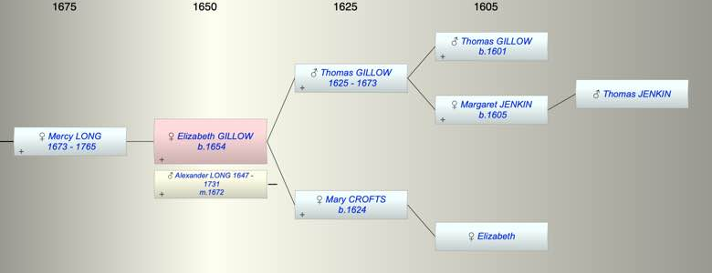

| [Index] |
| Elizabeth GILLOW (1654 - ) |
|  |
| b. 1654 at Walmer |
| m. 26 Aug 1672 Alexander LONG (1647 - 1731) |
| Parents: |
| Thomas GILLOW (1625 - 1673) |
| Mary CROFTS (1624 - ) |
| Siblings (3): |
| Margaret GILLOW (1646 - ) |
| Mary GILLOW (1648 - ) |
| John GILLOW (1651 - 1681) |
| Children (1): |
| Mercy LONG (1673 - 1765) |
| Events in Elizabeth GILLOW (1654 - )'s life | |||||
| Date | Age | Event | Place | Notes | Src |
| 1654 | Elizabeth GILLOW was born | Walmer | Note 1 | ||
| 26 Aug 1672 | 18 | Married Alexander LONG (aged 25) | Note 2 | ||
| 1673 | 19 | Birth of daughter Mercy LONG | Note 3 | ||
| 23 Nov 1673 | 19 | Death of father Thomas GILLOW (aged 48) | Note 4 | ||
| 1731 | 77 | Death of husband Alexander LONG (aged 84) | |||
| 1765 | 111 | Death of daughter Mercy LONG (aged 92) | St Laurence | Note 5 | |
| Created on a Mac™ using iFamily for Mac™ on 8 Oct 2023 |